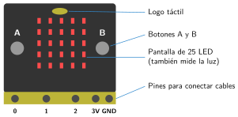
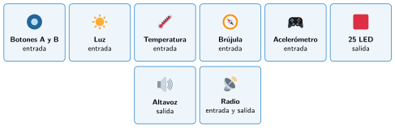
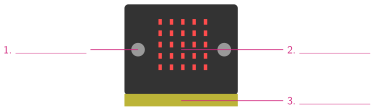

La placa Micro:Bit y MakeCode
🤔 Pienso5 min
Qué hago aquí: Piensa un momento y contesta con lo que ya sabes. No pasa nada si no lo sabes: es para empezar.
Coge una Micro:Bit. ¿Cuántas luces tiene la pantalla? ¿Qué letras ves junto a los botones?
📖 Leo y aprendo15 min
Qué hago aquí: Lee despacio, mira los dibujos y los ejemplos, y quédate con la idea clave del final.
La Micro:Bit es un ordenador muy pequeño. En un sistema de control hace de controlador. Además, trae sus propios sensores y actuadores.

Por detrás tiene más sensores: temperatura, brújula y acelerómetro. También tiene antena de radio, altavoz y el conector USB.
La Micro:Bit se programa con MakeCode. Está en la página makecode.microbit.org. Tiene tres zonas:
- Simulador: una Micro:Bit dibujada para probar el programa.
- Bloques: ordenados por colores (Básico, Entrada, Música…).
- Área de programación: donde encajas los bloques.

✏️ Hago25 min
Qué hago aquí: Haz las actividades en orden. Empieza siempre por las básicas.
Escribe el nombre de cada parte señalada.

Ordena los pasos del 1 al 4.
Pulsar Descargar. Conectar el cable. Esperar a que deje de parpadear. Arrastrar el archivo a MICROBIT.
Haz en MakeCode un programa que muestre tu nombre al iniciar. Pruébalo en el simulador.
Añade una cara sonriente después de tu nombre. Pasa el programa a la placa.
Un compañero quiere ver la temperatura todo el rato. Ha puesto el bloque en al iniciar. ¿Qué pasará? ¿Cómo lo arreglas?
✏️ Puedes responder escribiendo, con un dibujo o un esquema, o contándolo en voz alta.
🚀 Amplío (si quieres saber más)
Qué hago aquí: ¿Has terminado? Lee la curiosidad o elige el reto. Es voluntario.
Haz un corazón que late. En para siempre: corazón grande, pausa de 500 ms, corazón pequeño, pausa de 500 ms. ¿Qué pasa con una pausa de 100 ms?
✅ Compruebo5 min
Qué hago aquí: Contesta sin mirar la ficha y marca cómo lo llevas.